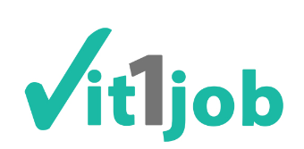

<!DOCTYPE html>
<html>
  <head>
    <meta charset="utf-8">
    <meta name="viewport" content="initial-scale=1, maximum-scale=1, user-scalable=no, width=device-width">
    <title></title>


    <!-- compiled css output -->
    <link href="css/ionic.app.css" rel="stylesheet">
    <link href="lib/ng-material-floating-button/mfb/dist/mfb.css" rel="stylesheet"/>

    <!-- ionic/angularjs js -->
    <script src="lib/ionic/js/ionic.bundle.js"></script>

    <!-- cordova script (this will be a 404 during development) -->
    <script src="cordova.js"></script>

    <script src="js/openfb.js"></script>
    <script src="js/ngopenfb.js"></script>

    <!-- your app's js -->
    <script src="js/app.js"></script>

    <!-- Libraries -->
    <script src="lib/ng-material-floating-button/src/mfb-directive.js"></script>
    <script src="lib/x2js/xml2json.js"></script>
    <script src="lib/angular-x2js/src/x2js.js"></script>

  </head>
  <body ng-app="starter">
<ion-pane>
  <ion-nav-view ></ion-nav-view>
</ion-pane>

    <!--<ion-pane>
      <ion-header-bar class="bar-calm">
        <a class="button icon-left ion-chevron-left button-clear button-dark">  </a>
        <h1 class="title">Connexion employeur</h1>
      </ion-header-bar>
      <ion-content padding="true">
        
        <div class="list list-inset">
          <label class="item item-input">
            <i class="icon ion-search placeholder-icon"></i>
            <input type="search" placeholder="Votre recherche ici...">
          </label>
        </div>

<div class="buttonConnect">
  <button class="button button-full button-positive">
    Connexion
  </button>
  <button class="button button-full button-positive grey">
    Inscription
  </button>
</div>

      </ion-content>
    </ion-pane>-->
  </body>
</html>
